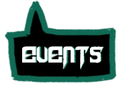
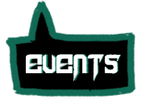

The unity
Chaotic Unity is een verwijzing naar de politici. Deze zijn vaak onmenselijk en nemen onredelijke beslissingen. Een groep politici is een grote choas. Chaotic Unity beschrijft onze visie over de politiek. Wij staan open voor vernieuwen en proberen mee te zijn met de tijd, maar willen het klassieke genre wel behouden zoals het is